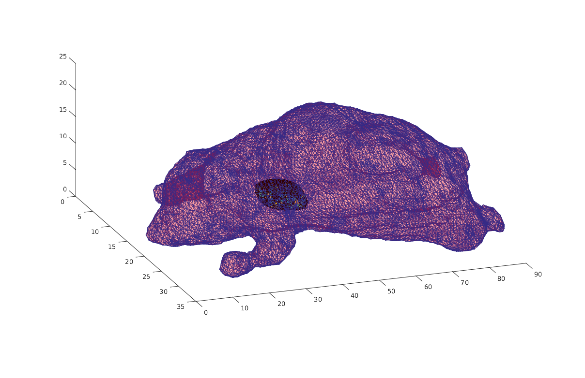
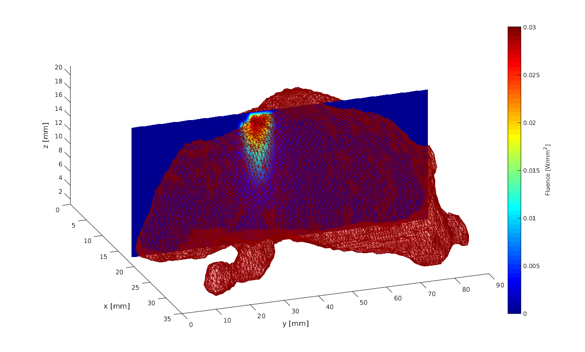

Working with a realistic 3d model
This example demonstrates how the functions introduced in the previous examples can be used to simulate light propagation in a mouse. Please note that the model is not part of this work and is not distributed here. The digimouse model can be obtained from http://neuroimage.usc.edu/mouse_atlas/tesselated_atlas.zip For information how to cite the mouse see http://neuroimage.usc.edu/neuro/Digimouse
Contents
if(exist('Tesselated_Atlas.mat', 'file') ~= 2) error('Could not find the mesh data file. Please unzip Tesselated_Atlas.mat from http://neuroimage.usc.edu/mouse_atlas/tesselated_atlas.zip to the examples folder.'); end load 'Tesselated_Atlas.mat'
Build mesh
The model is not exactly in the format needed. The surface is given as a separate array, therefore the surface triangles are mapped to the volumetric mesh
surface_coordinates = find(ismember(r,r_hull,'rows')); % find the surface coordinates from the volumetric mesh vmcmesh.BH = surface_coordinates(S_hull); % map the surface triangles to mesh triangles % The rest of the mesh definition is in the right format vmcmesh.r = r; vmcmesh.H = T;
Display the surface mesh
figure('rend','painters','pos',[10 10 1200 700]) hold on trimesh(vmcmesh.BH,vmcmesh.r(:,1),vmcmesh.r(:,2),vmcmesh.r(:,3),'facecolor', 'r','FaceAlpha',0.2); view(70,40); % Display the heart of the mouse (see labels_4_tetrahedrons.txt) tetramesh(vmcmesh.H(cond==3,:), vmcmesh.r); hold off
Create a medium and a boundary for the mesh
vmcmedium.absorption_coefficient=0.03; vmcmedium.scattering_coefficient=0.3; vmcmedium.scattering_anisotropy=0.9; vmcmedium.refractive_index=1.3; vmcmedium=createMedium(vmcmesh,vmcmedium); vmcboundary=createBoundary(vmcmesh,vmcmedium); % Find the approximate center of the heart by taking the mean of the % of the tetrahedrons that it consist of heart_location = mean(vmcmesh.r(vmcmesh.H(cond==3,1),:)); % For illustration purposes, we set the absorbtion coefficient of the heart % 3 times bigger as the rest of the body vmcmedium.absorption_coefficient(cond==3)=0.09; % To attach a light source, find boundary elements above it surface_above_heart = findBoundaries(vmcmesh, 'direction', ... heart_location, ... % obtain the surface elements from a region that starts heart_location+[0 0 20], ... % at the heart location and ends above it 5); % radius of the region vmcboundary.lightsource(surface_above_heart) = {'cosinic'};
Run the simulation
solution = ValoMC(vmcmesh, vmcmedium, vmcboundary);
ValoMC-3D -------------------------------------------- Version: v1.0b-118-g853f111 Revision: 131 OpenMP enabled Using 16 threads -------------------------------------------- Initializing MC3D... Computing... ...done Done
Fill the mesh region with a grid for plotting
Create a grid and obtain values from the mesh to the grid
mincoord = min(vmcmesh.r); maxcoord = max(vmcmesh.r); [gridx,gridy,gridz] = meshgrid(mincoord(1):maxcoord(1),mincoord(2):maxcoord(2),mincoord(3):maxcoord(3)); TR = triangulation(double(vmcmesh.H),vmcmesh.r); % create a matlab triangulation object from the points locations = [gridx(:) gridy(:) gridz(:)]; % form a 2D matrix from all the grid points indices = pointLocation(TR,locations); % query the indices of the tetrahedrons at grid points indices(isnan(indices)) = 1; % set the grid points that do not belong to the mesh to point at the first element gridval = reshape(solution.element_fluence(indices),size(gridx)); % get the values on the grid
Plot the solution
xmin = min(gridx(:)); ymin = min(gridy(:)); zmin = min(gridz(:)); xmax = max(gridx(:)); ymax = max(gridy(:)); zmax = max(gridz(:)); figure('rend','painters','pos',[10 10 1200 700]) hold on hslice = surf(linspace(xmin,xmax,100),... linspace(ymin,ymax,100),... ones(100)*(zmax-zmin)/2.0); % form a slice rotate(hslice,[0,1,0],90); xd = get(hslice,'XData'); yd = get(hslice,'YData'); zd = get(hslice,'ZData'); delete(hslice); colormap(jet); h = slice(gridx,gridy,gridz,gridval,xd,yd,zd); h.FaceColor = 'interp'; h.EdgeColor = 'none'; h.DiffuseStrength = 0.8; trimesh(vmcmesh.BH,vmcmesh.r(:,1),vmcmesh.r(:,2),vmcmesh.r(:,3),'facecolor', 'r','FaceAlpha',0.2); zlim([zmin zmax+1]); view(70,40); xlabel('x [mm]'); ylabel('y [mm]'); zlabel('z [mm]'); c=colorbar; c.Label.String = 'Fluence [W/mm^2]'; [v i] = max(solution.element_fluence(:));